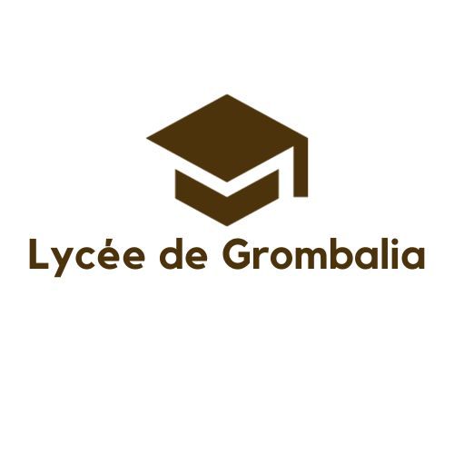

|  | |
|
| En 2020, j'ai obtenu un baccalauréat section technique, a lycée grombalia | J'ai étudié dans cet établissement pendant 3 ans de 2020 à 2023 et j'ai obtenu mon diplôme de licence en électrique, spécialité automatisme et informatique industrielle, avec mention trés bien. | Diplôme d'ingénieur informatique en cours depuis 2023. |